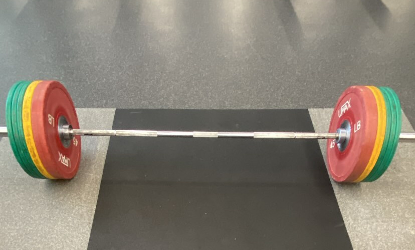
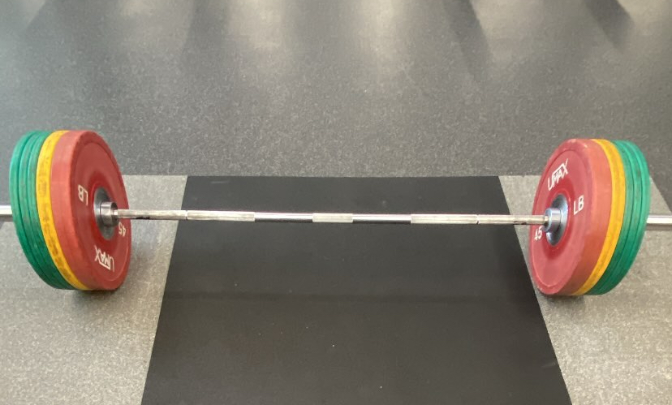

Welcome to my projects homepage!
 

I am a highly motivated individual who is able to work in a busy environment and produce high standards of work. I am an excellent team worker and am able to take instructions from all levels and build up good working relationships with all colleagues. I am flexible, reliable and possess excellent time management skills.
| Year | Coursework | Relevant Projects |
|---|---|---|
| Freshman |
|
|
| Sophomore |
|
|